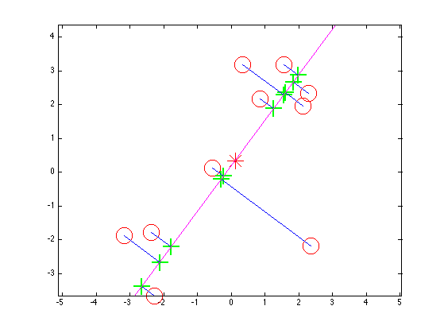

Visualize projection onto the principal components
setSeed(0);
n = 5;
X=[randn(n,2)+2.*ones(n,2);2.*randn(n,2)-2.*ones(n,2)];
[n d] = size(X);
[W, Z, evals, Xrecon, mu] = pcaPmtk(X, 1);
figure;
plot(mu(1), mu(2), '*', 'markersize', 20, 'color', 'r');
hold on
plot(X(:,1), X(:,2), 'ro', 'markersize', 20);
plot(Xrecon(:,1), Xrecon(:,2), 'g+', 'markersize', 20, 'linewidth',2);
for i=1:n
h=line([Xrecon(i,1) X(i,1)], [Xrecon(i,2) X(i,2)], 'color', 'b');
end
Z2 = [-5;5];
Xrecon2 = Z2*W' + repmat(mu, 2,1);
h=line([Xrecon2(1,1) Xrecon2(2,1)], [Xrecon2(1,2) Xrecon2(2,2)], 'color', 'm');
axis equal
printPmtkFigure('pcaDemo2');
